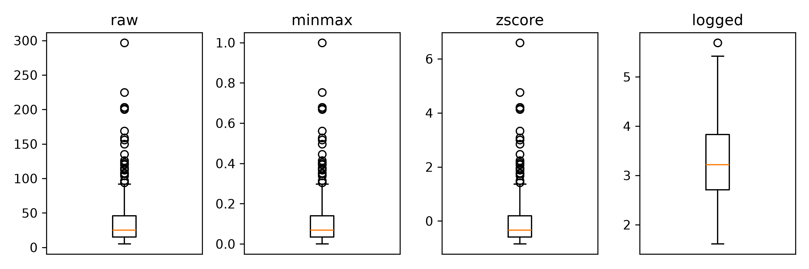

Measure the skewness of a variable and say, from the number alone, roughly what its histogram looks like.
Apply min-max scaling, standardisation and a log transformation, and state for each one what it changes and what it leaves alone.
Say which of the three you would apply before fitting a linear model, and why the honest answer is “it depends on the model”.
Why this, here
Exercise 2.2 — Correlation and missingness left you with a complete table of numbers. Models are sensitive to the scale and the shape of those numbers in ways that have nothing to do with the clinical content: a variable measured in thousands dominates one measured in units, and a long right tail puts most of the leverage in a handful of patients. This exercise is about what the common fixes actually do — including the one that does nothing.
A third file, and a warning about its last column
data/bupa.csv holds 345 patients with five liver-related blood tests (mcv, alkalinephosphotase, alamine, aspartate, gammaGlut), a count of daily alcoholic drinks, and a column called selector. There are no missing values.
Warningselector is not a diagnosis
It is the field the original depositors used to split the file into two sets, 200 rows and 145 rows. Tutorials across the internet model it as a liver disease label; it is not one, and a model that predicts it is predicting an arbitrary partition. We use this file only for transformation, where the label plays no part.
Compare the mean and the median of gammaGlut, then of mcv. In one of them they agree; in the other the mean is half as large again as the median. That gap is the fingerprint of a right tail, and skewness puts a number on it.
Zero for a symmetric variable, positive when the tail is to the right. Above about 1 it is worth doing something about; above 2 the mean is no longer a useful summary. This is one formula, not two: R has no skewness() in base, so we write it, and pandas has .skew() built in with a small-sample correction that makes no visible difference at this size.
alamine, gammaGlut and aspartate are strongly right-skewed, around 3.1, 2.9 and 2.3. mcv is mildly left-skewed. Plot the two extremes and the numbers become a picture.
#> raw minmax zscore logged
#> mean 38.28 0.11 0.0 3.31
#> std 39.25 0.13 1.0 0.78
The result that should bother you
Min-max scaling and standardisation leave the skewness exactly where it was. Only the log moves it, from about 2.9 to about 0.5.
Both scalings are affine: they multiply by one constant and subtract another. Skewness is built from the ratio of the third and second central moments, and that ratio is unchanged by multiplication — the constant cancels, top and bottom. The number is identical, not approximately identical.
So “normalising” the data does not make it normal. It makes it comparable, which is a different problem, solved for a different reason: a distance, a penalty or a gradient step treats a variable in thousands differently from one in units.
The log is the only one of the three that changes the shape, because it is not affine. It also changes the meaning: a coefficient fitted to log(gammaGlut) is about proportional change, not absolute, and that is something you have to be willing to say in the discussion section.
See it rather than take it on trust: three boxplots of the same variable.
#> {'whiskers': [<matplotlib.lines.Line2D object at 0x310d4d150>, <matplotlib.lines.Line2D object at 0x3111ee810>], 'caps': [<matplotlib.lines.Line2D object at 0x3111ef210>, <matplotlib.lines.Line2D object at 0x3111efa90>], 'boxes': [<matplotlib.lines.Line2D object at 0x30ec4d650>], 'medians': [<matplotlib.lines.Line2D object at 0x3111fc290>], 'fliers': [<matplotlib.lines.Line2D object at 0x3111fca10>], 'means': []}
#> Text(0.5, 1.0, 'raw')
#> []
#> {'whiskers': [<matplotlib.lines.Line2D object at 0x3111fd950>, <matplotlib.lines.Line2D object at 0x3111fe210>], 'caps': [<matplotlib.lines.Line2D object at 0x3111feb10>, <matplotlib.lines.Line2D object at 0x3111ff1d0>], 'boxes': [<matplotlib.lines.Line2D object at 0x3111fd0d0>], 'medians': [<matplotlib.lines.Line2D object at 0x3111ff990>], 'fliers': [<matplotlib.lines.Line2D object at 0x31120c110>], 'means': []}
#> Text(0.5, 1.0, 'minmax')
#> []
#> {'whiskers': [<matplotlib.lines.Line2D object at 0x31120d390>, <matplotlib.lines.Line2D object at 0x31120dc50>], 'caps': [<matplotlib.lines.Line2D object at 0x31120e4d0>, <matplotlib.lines.Line2D object at 0x31120ecd0>], 'boxes': [<matplotlib.lines.Line2D object at 0x31120cad0>], 'medians': [<matplotlib.lines.Line2D object at 0x31120f4d0>], 'fliers': [<matplotlib.lines.Line2D object at 0x31120fc10>], 'means': []}
#> Text(0.5, 1.0, 'zscore')
#> []
#> {'whiskers': [<matplotlib.lines.Line2D object at 0x311218f50>, <matplotlib.lines.Line2D object at 0x311219850>], 'caps': [<matplotlib.lines.Line2D object at 0x31121a110>, <matplotlib.lines.Line2D object at 0x31121a950>], 'boxes': [<matplotlib.lines.Line2D object at 0x311218690>], 'medians': [<matplotlib.lines.Line2D object at 0x31121b150>], 'fliers': [<matplotlib.lines.Line2D object at 0x31121b910>], 'means': []}
#> Text(0.5, 1.0, 'logged')
#> []
fig.tight_layout()plt.show()

The first three boxes are the same picture with different numbers on the axis. The fourth is a different picture.
Task 1 — The original’s question, with the trap left in
This was the task on the page this exercise comes from, and it is a good one.
1.1 Load the bupa dataset and apply a transformation of your choice to a feature of your choice. 1.2 Remove the label column (selector) from the dataset. 1.3 Visualise the data before and after the transformation using boxplots.
Do it — and when you reach 1.2, write one sentence saying why that step is in the list. It is not because selector is a label you must protect from leaking. It is because it is not a label at all, and a boxplot of it would invite you to treat it as one.
# Replace every ______ below, then run this cell.bupa_labs <- bupa |>select(-______)bupa_logged <- bupa_labs |>mutate(across(c(alamine, aspartate, gammaGlut), ______))sk <-sapply(bupa_logged[c("alamine", "aspartate", "gammaGlut")], skewness)skmax(sk) # expect -1 to 1
TipStuck?
select() drops a column when you put a minus in front of its name. For the transformation, the function is log — pass it as a bare function name inside across(), not as a call.
# Replace every ______ below, then run this cell.skewed = ["alamine", "aspartate", "gammaGlut"]bupa_labs = bupa.drop(columns=["______"])bupa_logged = bupa_labs.copy()bupa_logged[skewed] = np.______(bupa_labs[skewed])sk = bupa_logged[skewed].skew()print(sk)print(sk.max()) # expect -1 to 1
Task 2 — Where the log is not available
drinks is right-skewed too, and nine patients report zero. log(0) is -Inf, which propagates into every summary and plot downstream.
Try log(drinks) first and look at what you get. Then use log1p(), which computes \(\log(1 + x)\), and compare the skewness of both against the raw column.
# Replace every ______ below, then run this cell.sum(bupa$drinks ==0)summary(log(bupa$drinks)) # look before you fixdrinks_log1p <-______(bupa$drinks)c(raw =skewness(bupa$drinks), log1p =skewness(drinks_log1p))skewness(drinks_log1p) # expect -1 to 1
# Replace every ______ below, then run this cell.print((bupa["drinks"] ==0).sum())print(np.log(bupa["drinks"]).describe()) # look before you fixdrinks_log1p = np.______(bupa["drinks"])print(bupa["drinks"].skew(), drinks_log1p.skew())print(drinks_log1p.skew()) # expect -1 to 1
Adding 1 is a choice, not a fact. It is defensible for a count of drinks, where the units are fixed and 1 is small; it is arbitrary for a laboratory value in mu U/ml, where the same “+1” means something different depending on the assay. Say which you did.
Reflection
A colleague standardises every predictor before fitting a linear regression and reports that the model improved. What do you suspect happened, and what would you ask to see?
You log-transform gammaGlut and fit a model. A hepatologist asks what the coefficient means. Answer in one sentence, in their units, not yours.
Stretch
NoteStretch 1 — Is selector really arbitrary?
Compare gammaGlut between the two selector groups. The means differ by more than you might expect of a random partition — which does not make it a diagnosis, but does mean the split was not made by shuffling. What would you need to know before using either group on its own?
NoteStretch 2 — Transformations that are fitted
log() needs nothing from the data: the same input always gives the same output. Min-max needs a minimum and a maximum; standardisation needs a mean and a standard deviation; the Box-Cox transformation estimates a power. Sort the four into those that are fitted and those that are not, and keep the list — in Exercise 2.4 — Leakage, it is exactly the fitted ones that have to be learned on the training set alone.
What you can and cannot now claim
Can: that you can measure skewness, name what each of three transformations changes, and demonstrate that two of them do not change shape at all.
Cannot: that you have applied any of them safely. Every transformation in this chapter was fitted to all 345 rows at once, including the rows you would have held back for testing. Exercise 2.4 — Leakage is about what that costs.